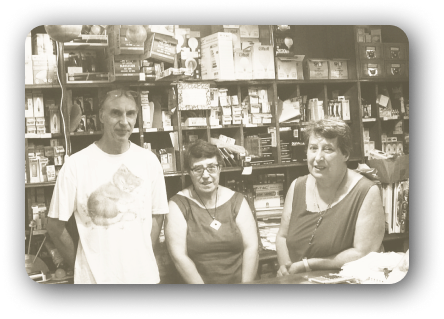

In Caruggio dal 1949
Eredi Casassa è una delle botteghe più antiche di Chiavari come testimonia onserva ancora molti degli arredi originali dell’epoca, compreso il bellissimo bancone e le vetrinette con gli scaffali. All’interno, Giulio Casassa porta avanti, con competenza, cortesia e gentilezza il lavoro della sua famiglia, quello della vendita al dettaglio di materiale elettrico. Ma a questa attività è riuscito ad aggiungere anche un tocco d’innovazione che riscuote moltissimi consensi sia tra i chiavaresi che tra i numerosi turisti. Dagli Eredi Casassa si possono trovare tutti i tipi di lampadine, i ricambi elettrici, il materiale, la minuteria metallica, tutto l’occorrente sia per i professionisti che per il fai-da-te. In più, un’accurata selezione di lampade, lampadari, oggettistica che Giulio porta a Chiavari essendo in contatto con rappresentanti e aziende da tutto il mondo.